|
Current Students: Sri Chandra Dronavalli
Status: Current
This work compares and visualizes the crime data for four different cities in the USA, namely Chicago, Baltimore, Dallas, and Denton. We assess areas that are significantly affected based on zip codes and variations in crime categories. As the crime rates have significantly changed both upward and downward throughout time, these changes are compared to their external causes such as population, unemployment, and poverty. The results show crime frequency and distribution across four different cities and supply valuable information about the complex relationship between social factors and criminal behavior. These results and outcomes will help the police department and law enforcement organizations better understand crime issues, map crime incidents onto a geographical map, and supply insight into factors affecting crime that will help them deploy resources and help in their decision-making process.
Analysis of Crime
a. Crime Data Comparison in Denton, Baltimore, Chicago, and Dallas Cities
Data preprocessing has been conducted based on the information gathered from city websites to obtain the necessary properties, including Year, Crime Type, and City. To comprehend the increase in crime based on time series, a comparison is made between 4 different cities as well as the analysis of the data is done through Tableau.
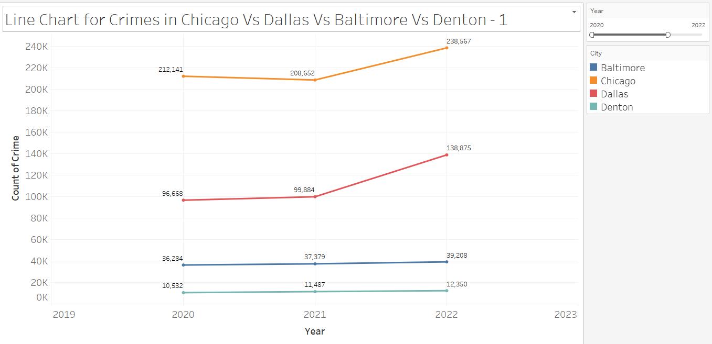
Fig. 1. Visual Made in Tableau to plot the count of Crime of the Year. The color shows details about City. The view is filtered by Year, which ranges from 2020 to 2022.
Fig. 1 the year 2020, Chicago has the highest crime rate with a record of 212141 cases whereas Denton has the lowest crime recorded with just 10532 cases. In the year 2021, Chicago has the lowest crime rate with a record of 208652 cases comparatively little less in 2020, whereas Denton, Baltimore, and Dallas have an increased crime rate compared with 2020. In the year 2022, Chicago and Dallas have the highest number of crime cases 238567 and 138875 recorded when compared with 2021 and 2020 whereas Denton and Baltimore had a slight increase in crime when compared with 2021 and 2020. In the year 2023 by Q2, Chicago’s crime rate is soaring high, and Dallas, Denton, and Baltimore have the crime rates recorded as 45744,5269 and 18696.
b. Crime categories for each year
The crime type is quite different compared to cities and it varies based on the year of offence.
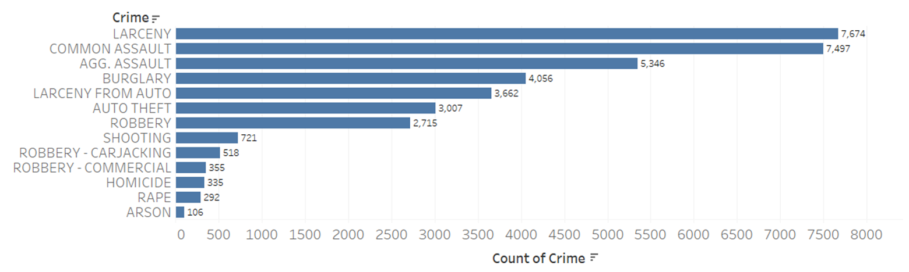
Fig. 2: Crime categories in Baltimore during 2020.
Fig. 2 Shows the Horizontal bar chart of crime types in Baltimore, Larceny is the highest amount of crime recorded at 7674 also Common Assault is near to top crime types with 7497 and the least amount recorded is Arson Type with 106 crimes recorded in 2020.
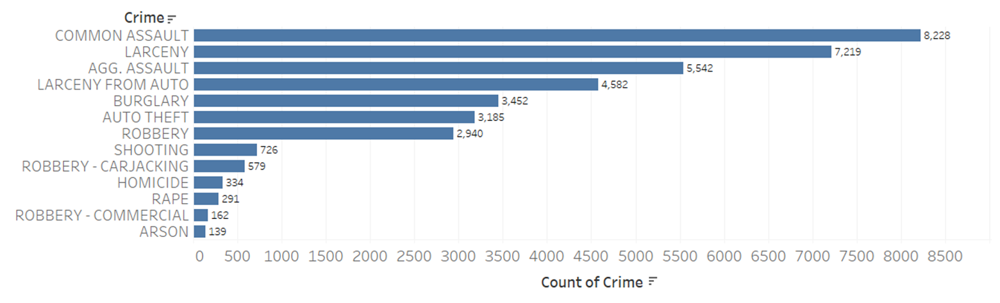
Fig. 3: Crime categories in Baltimore during 2021.
Fig. 3 Shows the Horizontal bar chart of crime types in Baltimore, Common Assault is the highest amount of crime recorded at 8228 also Larceny is near to top crime types with 7219 and the least amount recorded is Arson Type with 139 crimes recorded in 2021.
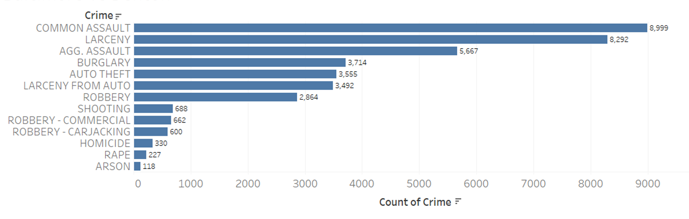
Fig. 4: Crime categories in Baltimore during 2022.
Fig. 4 Shows the Horizontal bar chart of crime types in Baltimore, Common Assault is the highest amount of crime recorded at 8999 also Larceny is near to top crime types with 8292 and the least amount recorded is Arson Type with 118 crimes recorded in 2022.
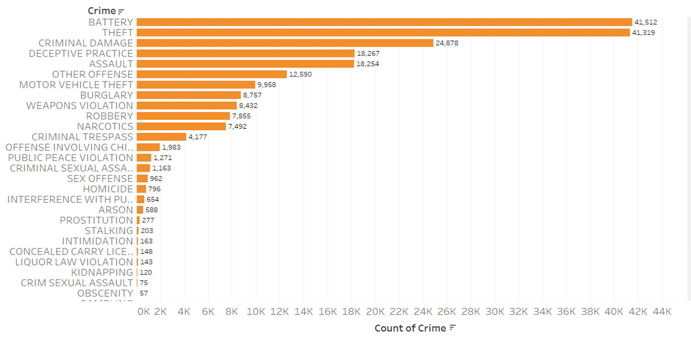
Fig. 5: Crime categories in Chicago during 2020.
Fig. 5 Shows the Horizontal bar chart of crime types in Chicago, Battery is the highest amount of crime recorded at 41512 also Theft is near to top crime types with 41319 and the least amount recorded is Ritualism and Non-Criminal with 1 crime recorded in 2020.
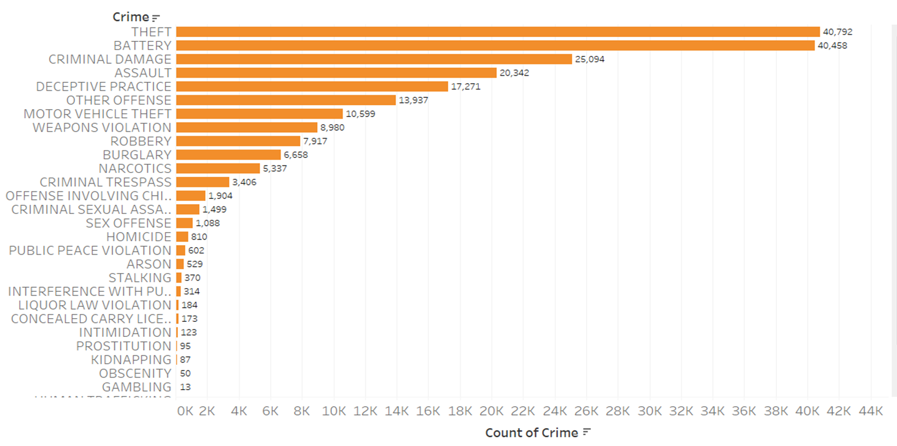
Fig. 6: Crime categories in Chicago during 2021.
c. Crime based on demographics.
The Safest places to live is determined based on the amount of crime committed or recorded by different sources like City Police Department and FBI. Below analysis is done on four different cities based on their demographics. As per the current data available in different city websites Denton data have the masked address where geo-coding has been applied on the API and identified their latitude and longitude with the Zip codes. Whereas Dallas data have all the attributes like latitude, longitude, and zip code for geo-mapping analysis. Furthermore, Chicago and Baltimore data just have latitude and longitude, and reverse geo-coding has been applied on the API to retrieve zip codes. Below is the flow charts for geo-coding and reverse geo-coding
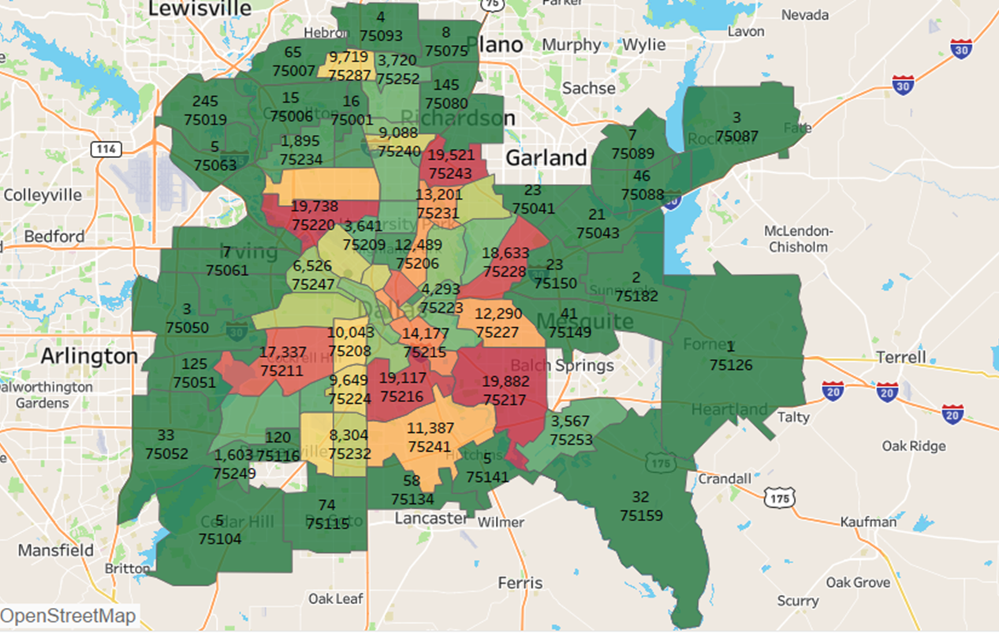
Fig. 7: Count of Crimes based on Zip code in Dallas from 2020 to 2022.
Fig. 7map visualization represents the sum of crime committed during the year 2020 to 2022 in Dallas where zip code 75126 recorded crime count of 1, which could be consider as the safest place to live and Zip codes such as 75216,75217,75220,75243,75211,75228 are considered has a red flag zone where crimes are recorded high.
Furthermore, few zip codes that fall under safest places such as 75087,75089,75182,75141,75104,75050,75061,75063,75075 where crime count is less than 10.
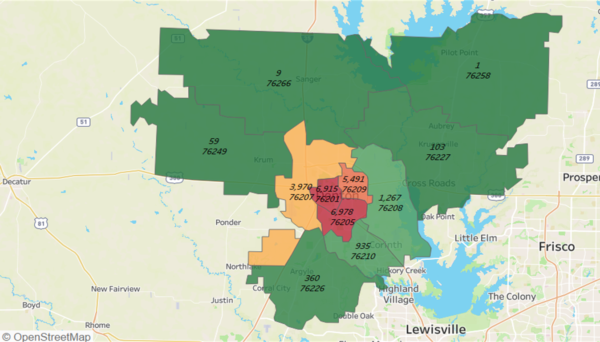
Fig. 8: Count of Crimes based on Zip code in Denton from 2020 to 2022.
Fig. 8 map visualization represents the sum of crime committed during the year 2020 to 2022 in Denton where zip code 76258 recorded crime count of 1, which could be consider as the safest place to live and Zip codes such as 76205,76201 are considered has a red flag zone where crimes are recorded high.
Furthermore, few zip codes that fall under safest places such as 76266,76249,76227 where crime count is less than 150.
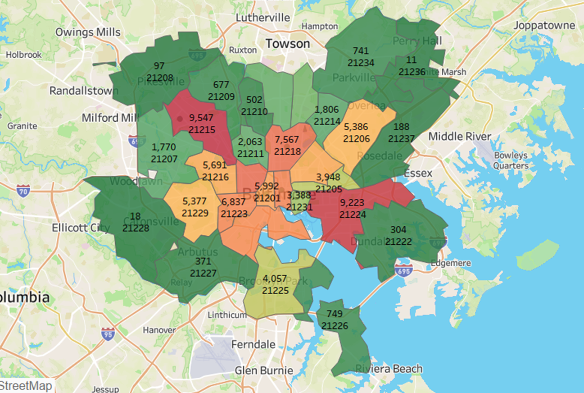
Fig. 9 Count of Crimes based on Zip code in Baltimore from 2020 to 2022.
Fig. 9 map visualization represents the sum of crime committed during the year 2020 to 2022 in Baltimore where zip code 21236 recorded crime count of 11, which could be consider as the safest place to live and Zip codes such as 21224,21215 are considered has a red flag zone where crimes are recorded high.
Furthermore, a few zip codes that fall under safest places such as 21228,21208,21237 where crime count is less than 200.
Analysis of Crime Comparison with Factors
a. Population
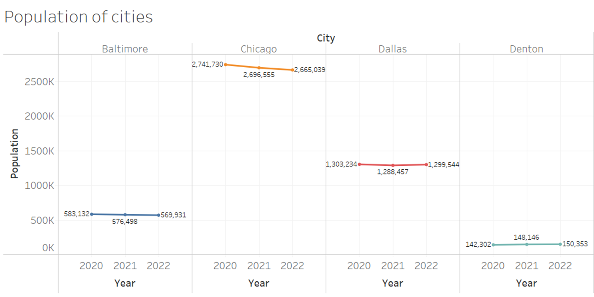
Fig 10: Count of Population in 4 Cities from 2020 to 2022.
In Chicago, there is a decrease in the population from 2020 to 2022. In Dallas, there is a decrease in the population from 2020 to 2021 and a slight increase from 2021 to 2022. In Baltimore, there is a decrease in the population from 2020 to 2022. In Denton, there is an increase in the population from 2020 to 2022.
The population in Chicago is the highest, whereas Denton has the lowest.
b. Analysis of Crime Comparison with Population
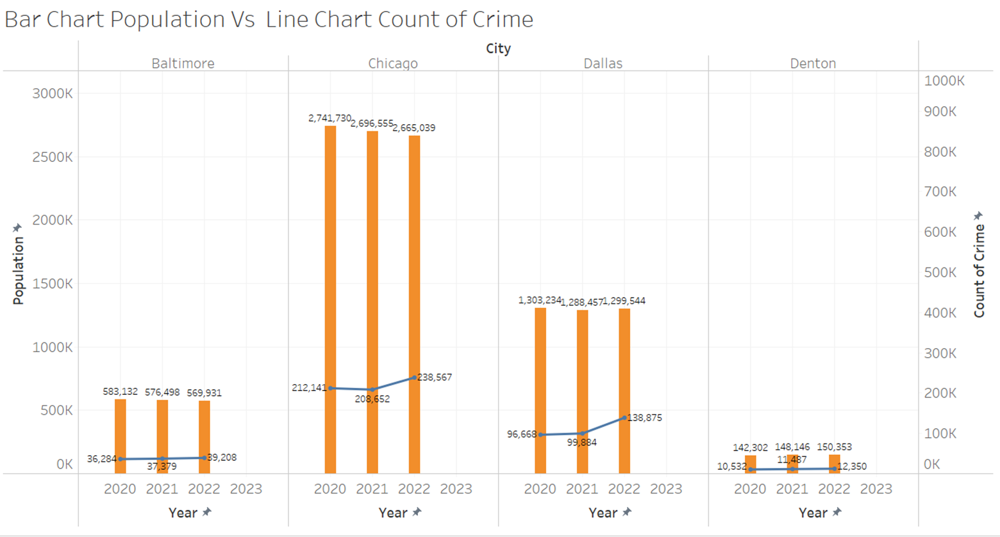
Fig 11: Count of Population Vs Crime in 4 Cities from 2020 to 2022.
In Baltimore, the population has decreased but crime has increased over the year 2020 to 2022. In Chicago, the population has decreased but crime has decreased from 2020 to 2021, but there is an increase in crime from 2021 to 2022. In Dallas, the population has decreased from 2020 to 2021 and increased from 2021 to 2022, but crime is increasing over the year 2020 to 2022. In Denton, the population increased from 2020 to 2022 whereas crime also increased in the year 2020 to 2022.
Compared to other cities the population and crime is least in Denton and highest in Chicago.
c. Population Comparison with Employed.
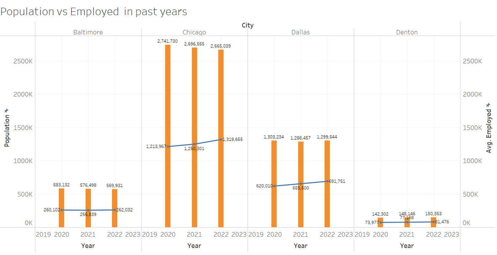
Fig 12: Count of Population Vs Employed in 4 Cities from 2020 to 2022.
In Baltimore, the population has decreased but employment has decreased from 2020 to 2021 and increased from 2021 to 2022. In Chicago, the population has decreased but employment has increased from 2020 to 2022. In Dallas, the population has decreased from 2020 to 2021 and increased from 2021 to 2022, but employment is increasing over the year 2020 to 2022. In Denton, the population increased from 2020 to 2022 whereas employment also increased in the year 2020 to 2022.
Compared to other cities the population and employment is least in Denton and highest in Chicago. |